Les meilleurs langages
 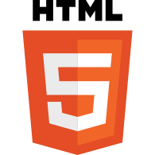
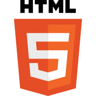
Le HTML
Le HyperText Markup Language, généralement abrégé HTML ou, dans sa dernière version, HTML5, est le langage de balisage conçu pour représenter les pages web. Ce langage permet d’écrire de l’hypertexte, de structurer sémantiquement une page web, de mettre en forme du contenu, de créer des formulaires de saisie ou encore d’inclure des ressources multimédias dont des images, des vidéos, et des programmes informatiques. Le HTML offre également la possibilité de créer des documents interopérables avec des équipements très variés et conformément aux exigences de l’accessibilité du web. Il est souvent utilisé conjointement avec le langage de programmation JavaScript et des feuilles de style en cascade (CSS). HTML est inspiré du Standard Generalized Markup Language (SGML). Il s'agit d'un format ouvert.

Le CSS
Les feuilles de style en cascade, généralement appelées CSS de l'anglais Cascading Style Sheets, forment un langage informatique qui décrit la présentation des documents HTML et XML. Les standards définissant CSS sont publiés par le World Wide Web Consortium (W3C). Introduit au milieu des années 1990, CSS devient couramment utilisé dans la conception de sites web et bien pris en charge par les navigateurs web dans les années 2000.
 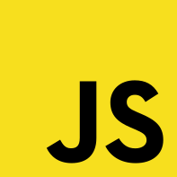
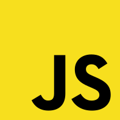
Le javascript
JavaScript est un langage de programmation de scripts principalement employé dans les pages web interactives et à ce titre est une partie essentielle des applications web. Avec les langages HTML et CSS, JavaScript est au cœur des langages utilisés par les développeurs web4. Une grande majorité des sites web l'utilisent5, et la majorité des navigateurs web disposent d'un moteur JavaScript6 pour l'interpréter.
JavaScript est aussi employé pour les serveurs Web7 avec l'utilisation de Node.js8 ou de Deno9. JavaScript a été créé en 1995 par Brendan Eich et intégré au navigateur web Netscape Navigator 2.0. L'implémentation concurrente de JavaScript par Microsoft dans Internet Explorer jusqu'à sa version 9 se nommait JScript, tandis que celle d'Adobe Systems se nommait ActionScript. JavaScript a été standardisé sous le nom d'ECMAScript en juin 1997 par Ecma International dans le standard ECMA-262.
La version en vigueur de ce standard depuis juin 2022 est la 13e édition. C'est un langage orienté objet à prototype : les bases du langage et ses principales interfaces sont fournies par des objets. Cependant, à la différence d'un langage orienté objets à classes, les objets de base ne sont pas des instances de classes. En outre, les fonctions sont des objets de première classe. Le langage supporte le paradigme objet, impératif et fonctionnel. JavaScript est le langage possédant le plus large écosystème grâce à son gestionnaire de dépendances npm, avec plus de deux millions de paquets en septembre 202210.e
 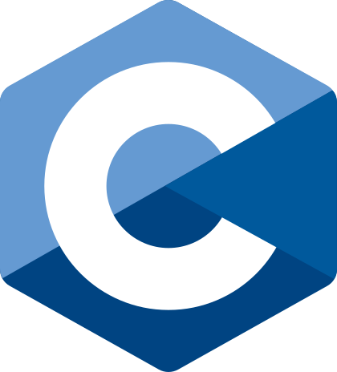
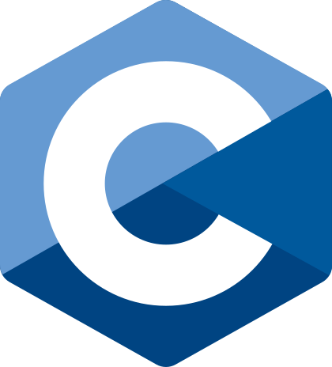
Le C
C est un langage de programmation impératif, généraliste et de bas niveau. Inventé au début des années 1970 pour réécrire Unix, C'est devenu un des langages les plus utilisés, encore de nos jours. De nombreux langages plus modernes comme C++, C#, Java et PHP ou JavaScript ont repris une syntaxe similaire au C et reprennent en partie sa logique. C offre au développeur une marge de contrôle importante sur la machine (notamment sur la gestion de la mémoire) et est de ce fait utilisé pour réaliser les « fondations » (compilateurs, interpréteurs, …) de ces langages plus modernes.

Le C++
C++ est un langage de programmation compilé permettant la programmation sous de multiples paradigmes, dont la programmation procédurale, la programmation orientée objet et la programmation générique. Ses bonnes performances, et sa compatibilité avec le langage C en font un des langages de programmation les plus utilisés dans les applications où la performance est critique. Créé initialement par Bjarne Stroustrup dans les années 1980, le langage C++ est aujourd'hui normalisé par l'ISO. Sa première normalisation date de 1998 (ISO/CEI 14882:1998), ensuite amendée par l'erratum technique de 2003 (ISO/CEI 14882:2003). Une importante mise à jour a été ratifiée et publiée par l'ISO en septembre 2011 sous le nom de ISO/IEC 14882:2011, ou C++113. Depuis, des mises à jour sont publiées régulièrement : en 2014 (ISO/CEI 14882:2014, ou C++144), en 2017 (ISO/CEI 14882:2017, ou C++175) puis en 2020 (ISO/IEC 14882:2020, ou C++206).

Le python
Python est un langage de programmation interprété, multiparadigme et multiplateformes. Il favorise la programmation impérative structurée, fonctionnelle et orientée objet. Il est doté d'un typage dynamique fort, d'une gestion automatique de la mémoire par ramasse-miettes et d'un système de gestion d'exceptions ; il est ainsi similaire à Perl, Ruby, Scheme, Smalltalk et Tcl. Le langage Python est placé sous une licence libre proche de la licence BSD et fonctionne sur la plupart des plateformes informatiques, des smartphones aux ordinateurs centraux, de Windows à Unix avec notamment GNU/Linux en passant par macOS, ou encore Android, iOS, et peut aussi être traduit en Java ou .NET. Il est conçu pour optimiser la productivité des programmeurs en offrant des outils de haut niveau et une syntaxe simple à utiliser. Il est également apprécié par certains pédagogues qui y trouvent un langage où la syntaxe, clairement séparée des mécanismes de bas niveau, permet une initiation aisée aux concepts de base de la programmation4. Selon l'Index TIOBE, notamment en raison de son efficacité pour l'apprentissage automatique, sa popularité va croissante ; et en 2022 n'a toujours pas montré de signe de ralentissement5.
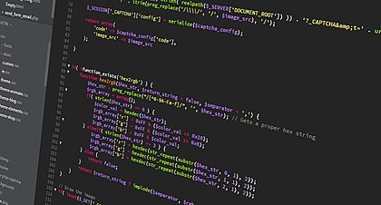 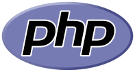
Le PHP
PHP: Hypertext Preprocessor6, plus connu sous son sigle PHP (sigle auto-référentiel), est un langage de programmation libre7, principalement utilisé pour produire des pages Web dynamiques via un serveur web6, mais pouvant également fonctionner comme n'importe quel langage interprété de façon locale. PHP est un langage impératif orienté objet. PHP a permis de créer un grand nombre de sites web célèbres, comme Facebook et Wikipédia8. Il est considéré comme une des bases de la création de sites web dits dynamiques mais également des applications web.
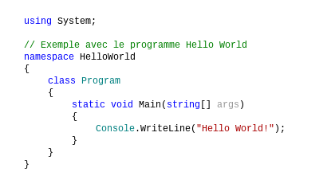 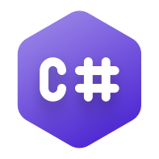
C#
C# (C sharp) est un langage de programmation orientée objet, commercialisé par Microsoft depuis 20022 et destiné à développer sur la plateforme Microsoft .NET, au même titre que d’autres langages liés à cette plateforme (ex. : VB .NET, J#, etc.). C# est dérivé du C++ et très proche du Java dont il reprend la syntaxe générale ainsi que les concepts, y ajoutant des notions telles que la surcharge des opérateurs, les indexeurs (en) et les délégués. Il est utilisé notamment pour développer des applications web sur la plateforme ASP.NET, ainsi que des jeux vidéo avec le moteur de jeux Unity et Godot3.
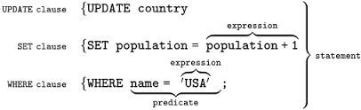
SQL
SQL (Structured Query Language, « langage de requêtes structurées ») est un langage informatique normalisé servant à exploiter des bases de données relationnelles. La partie langage de manipulation des données de SQL permet de rechercher,d'ajouter, de modifier ou de supprimer des données dans les bases de données relationnelles.
Articles populaires

Mac ou PC ? La guerre est déclarée

Découvrez Rust. Les avantages du C++ alliés à la sécurité.

Quel avenir pour le code ? Le no code va t'il changer la vie des développeurs
Les événements à venir

La nuit du code

Formation managers des SI

Présentation du dernier framework JS : Last js

Marathon du Hacking

Découverte : Le Brain Driven Development

La foire au Vim